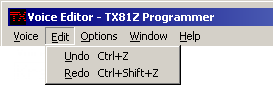

Retrieve Voice
Requests and receives the voice editor buffer from the TX81Z. This will update both the voice editor and the VCED entry in the snapshot list in the main window, since they refer to the same data.
Transmits the current VCED in the editor to the TX81Z.
This brings up the store dialog so you can select where you want the voice to
be stored.
Select a slot and click OK to store the voice in that slot. The program
will transmit a series of remote control messages to store the voice edit
buffer in the memory number you select.
This function will initialize the editor to the usual INIT VOICE voice and
transmit it to the unit.
These commands will add the voice that is currently in the editor to one of the
libraries in the main window. These don't affect the snapshot or the unit at
all. If you have the Disallow
Duplicates In Libraries option turned on in the main window and the voice
you are trying to add happens to be a duplicate of an already existing voice,
then a message will pop up and tell that the voice could not be added.
This closes the voice editor window. It does the same thing as clicking the
'X' button in the upper right corner of the window.
This command will close all of the TX81Z Programmer windows and exit the
program. If either of the libraries have been modified but not saved, then
you will prompted to save them. If the snapshot has been modified, then you
will be prompted to save it, unless you have the Automatically Save Snapshots
option turned on, in which case the snapshot will be saved without prompting
you.
This undoes all the changes that have been made to the voice since you changed
focus to the control that currently has focus. In other words, if you click
on a slider and make a bunch of changes, slide it up and down and so forth,
when you undo, it will set that control to the value it had when you clicked
on it. I implemented it this way because to implement undo for every single
change could take hundreds of undos to go back to beginning, which would take
forever and take up a lot of memory.
If you have operator following on, then the changes done due to the operator
following will also be undone.
You can also undo copying and swapping by LCD dragging and dropping.
You can also undo copying, swapping and randomizing operators or parts of
operators.
What you can't undo is things that occur to the entire voice. This includes
retrieving, initializing, transmitting and storing. The entire undo list is
cleared and the menu item is grayed out when any of these things happen. Also,
if you do something to the voice in the main window, this is also undoable and
it will clear the undo list in the voice editor.
This undoes the last undo that you did. :-)
When I was making this editor and trying to figure out the easiest way to
do things, I originally created combo boxes for
the selecting of waveforms. This didn't appeal to me after awhile because I
felt it was kind of awkward to change waveforms when you're trying to compare
them, so I created a control, which I dubbed a radio
panel control, explicitly for this purpose. The problem with the radio
panels is that the waveforms are so small that it's difficult to see what the
waveforms are if you're not familiar with them, so I left the combo boxes in
as an option. This option switches between the two types of controls.
This is another control-swapping option that swaps out the range/coarse/fine
frequency controls and replaces them with a single, unified frequency slider.
See Simplified Frequency Controls for more
information.
This hides the labels for AR, D1R, D1L, D2R, RR, SHIFT, and Key Up on the EG
Graphs, if you find them distracting.
This disables the mouse wheel.
When this is set the mouse wheel will scroll the voice editor window if all the
controls don't fit on your screen. See scrolling
for more about moving around the voice editor window.
This option will set the mouse wheel to change the value of the current control.
This might make it easier to set an LCD control to a certain value.
If the window is sized so that all of the controls won't fit inside it, scroll
bars will normally appear so you can access all the controls. This option
hides these scroll bars if you want to save a little screen real estate and use
one of the alternative scrolling methods. See scrolling for a summary of different scrolling
methods.
This will fit the window around all of the controls, if your screen resolution
is set high enough. If not, it will give it the old college try and the window
will fill the screen.
The rest of the options in this menu will open a different program window. The
windows are covered in their own sections:
Brings up the voice editor section of the manual.
Transmit Voice
Store Voice

Warning
The program change table will be updated before the voice is stored. This is
necessary to make sure that the editor is storing the voice in the right place.
Warning
You'll want to be careful with this function because if the voice edit buffer
in the unit and the VCED of the editor's snapshot are not properly synchronized
then you could end up storing a voice that's different from the voice you are
looking at in the editor. You could also overwrite a patch that you didn't
intend to overwrite if the memory banks aren't synchronized, so be careful.
It's a good idea to save all of your important patches in a library so they can
be recovered if they accidentally get wiped out on the unit.
Initialize Voice
Add To Library 1
Add To Library 2Close Editor
Exit Program
Edit Menu

Undo
Redo
Options Menu

One Click OP & LFO Wave Type Selection
Simplified Frequency Selection
Hide Labels On EG Graphs
Mouse Wheel Off
Mouse Wheel Scrolls
Mouse Wheel Edits
Hide Scroll Bars
Window Menu

Fit To Controls
MIDI Keyboard Control, Remote Control, Main Window, etc.
Help Menu

Help